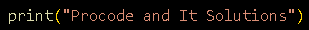

Python
Información:
Funciones:
- print("texto"): Se utiliza para mostrar información en la consola. Puedes imprimir texto, variables u otros datos escribiendo
print() y dentro comillas dobles.

- #: Se usa para escribir comentarios en el código sin que afecten su ejecución. Solo son visibles dentro del editor.
- int(): Convierte datos ingresados por el usuario en números enteros. Es útil para trabajar con datos numéricos.
- while: Se utiliza para crear bucles que se repiten mientras una condición sea verdadera.
IT Solutions
Información:
 Instagram
Instagram Facebook
Facebook Tik Tok
Tik Tok